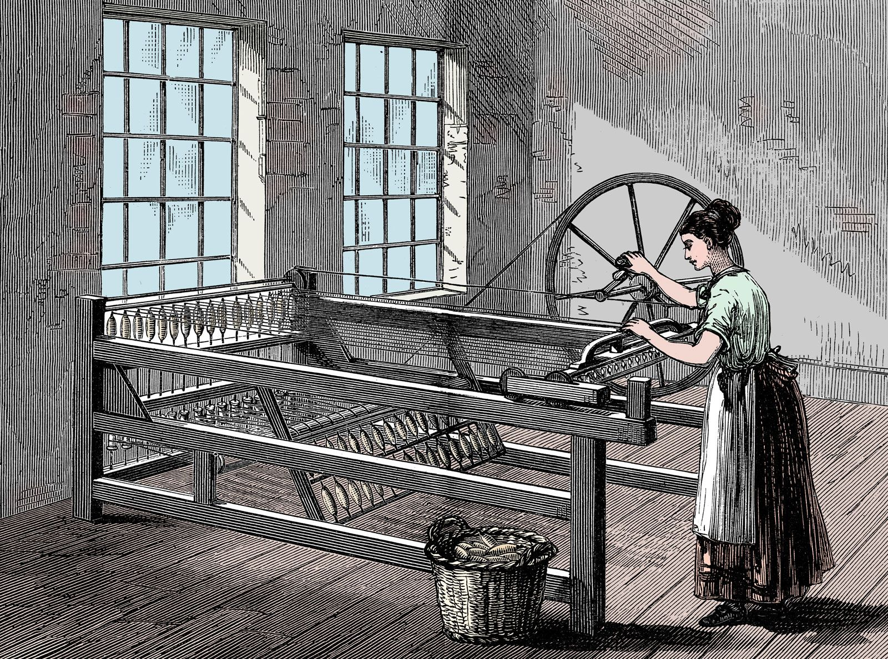
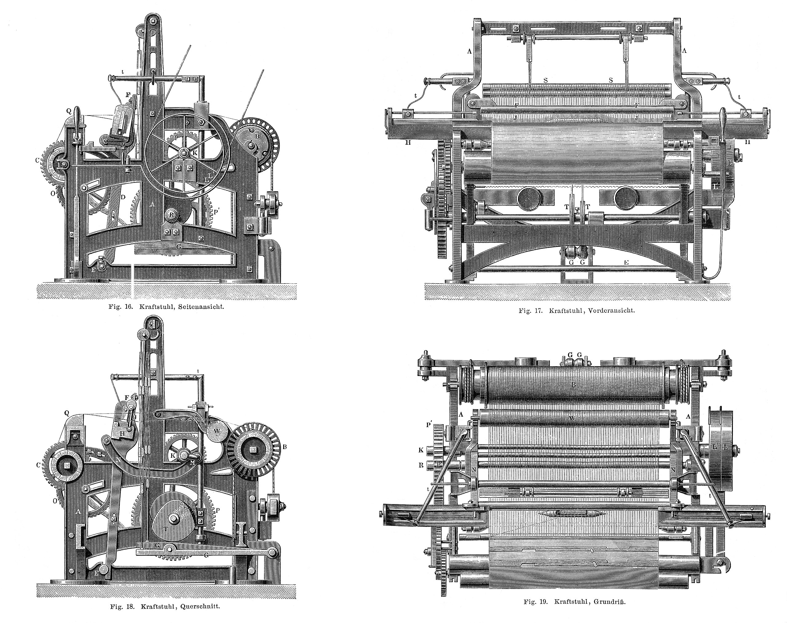
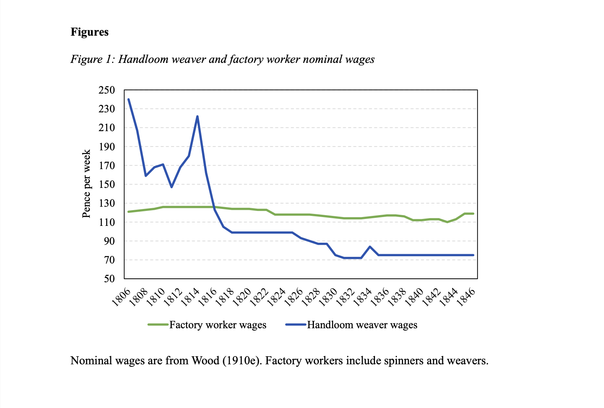
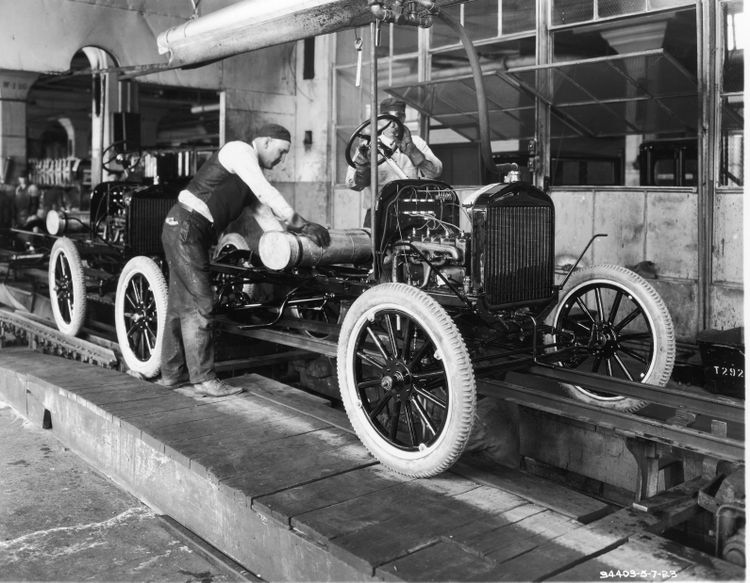
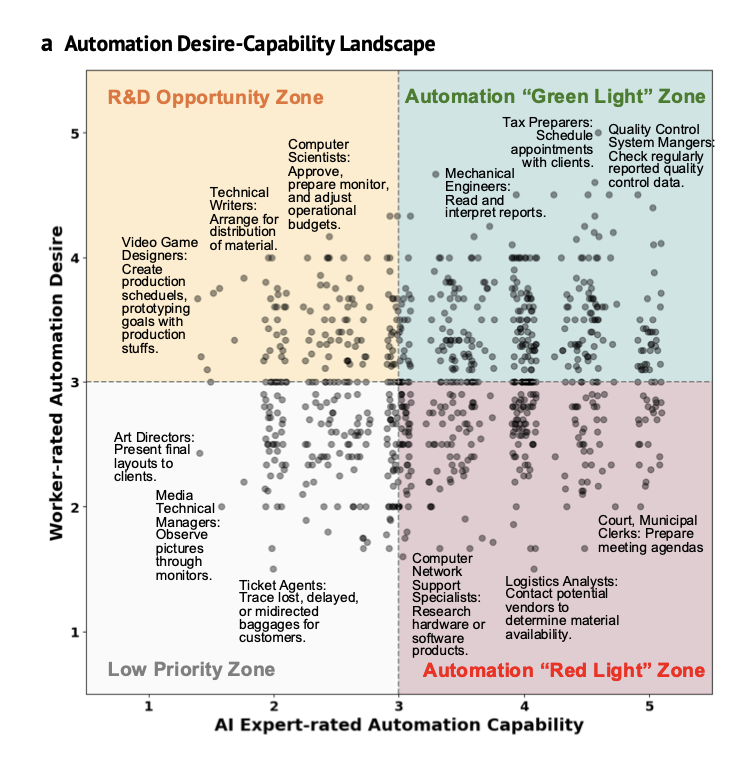

Automation and Labor Markets: An Alignment Problem
Written by: Faraz Rahman
After studying across Italy, then teaching in Prague, Sigismund Gelenius found himself toiling away in an early printing press for most of his adult life (Grafton). Gelenius had become “underemployed”, a growing fear for many American college-graduates who see artificial intelligence (AI) as a threat to white-collar work. Since Gelenius, technology has transformed labor markets repeatedly, causing many to wonder
- How do new technologies impact what people do for work?
- How do markets amplify or alter these impacts?
Concern for health of the labor market should go beyond job-seekers. Most Americans do knowledge work rather than physical labor, and this population includes many invested in the stock market and with active political interests. A labor shake-up would not happen silently.
I spent some time loking back at history last Fall to better understand how labor markets change under the influence of automation This blog is a compilation of some of my thoughts.
I’ve realized automation doesn’t intrinsically help or harm workers. Their effects depend on how they collide with markets. Demand elasticity, strong complements and worker bargaining power in a labor market can be indicative of when automation productivity actually “trickles down” to the laborer. When markets lack these qualities the effects can be disastrous, and I'll start with the most infamous case:
Prosperity and Peril for the Handweaver
In 1812, an English textile manufacturer received the following:
“You will take notice that if [the machines] are not taken down by the end of next week I shall attach one of my Lieutenants with at least 300 men to destroy them [...] – the General of the Army of Redressers, Ned Ludd, Clerk”. (Liversidge, 1972)
The Luddites efforts earned them a place in most history textbooks, but the term luddite has become a diminutive for someone ignorant of or opposed to technology. It’s easy to forget that their factory rebellions were a natural response to the shifting tides of economic power at the turn of the 19th century.
Textiles were a dominant industry in North England during the late 1700s. There were two parts to the industry. The first, spinning, was the process of turning raw materials (e.g. cotton, wool, flax) into yarn, and the second, weaving, processed the yarn into textiles for consumer purchase throughout the British empire. Both were done through what we would now call a gig-economy that defined work for common Englishmen in the relvant parts of the country.
As Thompson put it (Acemoglu & Johnson, 2024):
“Weaving had offered an employment to the whole family [...] The young children winding bobbins, older children [...] helping to throw the shuttle in the broad-loom; adolescents working a second or third loom; the wife taking a turn at weaving in and among her domestic employments. The family was together, and however poor meals were, at least they could sit down at chosen times.”
A shortage of labor in the 1760s pushed inventors to productionize the spinning jenny and waterframe which automated most of the spinning process. The respective labor market collapsed as a result and cottage spinners were quickly replaced by factory workers (Allen, 2017). But many of the displaced workers had an escape hatch in hand-weaving: a new abundance of cheap factory yarn made weaving incredibly profitable during the 1780s to 1810s. The automation inadvertently led to the “golden age of hand loom weaving” where wages were plenty and the position of a hand-weaver was envied amongst workers in other parts of England [^1] (Acemoglu & Johnson, 2024; Allen, 2017).

A reckoning
Seeing how profitable the market had grown, Edmund Cartwright set out to accelerate weaving production almost as soon as the golden age begun. In 1785, he patented what is now credited as the first power-loom, but it took a few decades and many successors to finally land on a recipe that could operate without human attendance. Their efforts culminated in a wave of scaling that led to 5,732 looms in Manchester and the surrounding areas in 1821 nearly doubled in two years by 1823 (Guest, 1823).

The rapid expansion was catastrophic for real wages. The typical handweaver in 1820 could purchase less than half the quantity of food they could twenty years earlier. Unlike spinning, there was no downstream business for working-people to migrate to. All productivity growth went to factory owners and downstream consumers, many of whom were outside of England and saw mass availability of cheap textile products (Clingingsmith & Williamson, 2004).[^2] For those who took up factory work, a living wage was provided in exchange for… living.

Women and children worked 14-16 hour shifts day and night to keep the looms running. The work was dreary and dangerous. Children were not given an education and the government provided no support to protect them, until the 1850s (Acemoglu & Johnson, 2024; Hutchins and Hariison, 1911). The factory system had consequences on the mental and physical well-being of the English working class they lacked both economic and political power. Violence and destruction were one of a few options to voice their demands: by the 1810s, the cottage-workers saw the tide coming and the Luddite’s machine-breaking was their best response.
The fall of the weaver tells an important story. The mechanization that automated spinning and weaving were sibling technologies, but they lead to very different outcomes for the economic pie. What drove the difference was not technology, but rather the underlying market they were deployed in. I think this is a point worth emphasizing since modern discourse usually centers conversation around either technology or markets when it is their relationship that matters the most. That being said two natural questions are:
- What indicates when technology in a market will lead to growth or harm?
- How have technology and markets aligned in other eras?
Leaders in Silicon Valley boast of the productivity benefits of large language models, and of course, automation is designed to make work faster (otherwise it’s doing something wrong). But average productivity is a deceptive metric for predicting economic growth, even within a single firm. Nobel Prize winners, Daron Acemoglu and Simon Johnson advocate for marginal productivity of labor – how much incentive a firm has to hire a new employee – as a more revealing measure which actually depends on the market (2024). When spinning was automated, the complementary weaving market saw fatter margins from cheaper threads and provided a way for cottage-spinners to increase or maintain their marginal productivity.[^3] When both spinning and weaving were mechanized, output was bottlenecked by machines not labor. Hiring more workers wouldn’t increase revenue to a factory-owner leaving the common-man little bargaining power; without another complementary market for cottage labor, workers had nowhere to go.
We’ll see the same principles tell a different story if we move a century forward.
The Engine Roaring ‘20s
Through the late 1800s around half of Americans worked on agricultural land, but the tractor, McCormick reaper, and soon-to-be developed Haber-Bosch process promised agricultural productivity without need for human labor. By the 1910s, it seemed that Americans might face the same plight of their English brethren a century earlier... The market did shrink, by the 1930s only 21% of Americans worked on farms, but the economic developments that followed were very different (Dimitri et al. 2005).
“The Chief Business of the American People is Business” - Calvin Coolidge
Troves of new jobs opened up as rural workers migrated to metropolitan hubs. The typical American had purchasing power and free time: Hollywood movies, consumer appliances and credit cards captured the zeitgeist of the 1920s. Above all, the automobile was the icon for American life, and most economic productivity was a result or reflection of the industry making them.

By the end of the 1920s, Henry Ford’s assembly line dropped the price of an automobile to $260, less than a tenth of what it had been previously. At the time, most Americans did not have cars, so demand skyrocketed. Ford built plants around the U.S and employed ~175,000 workers across functions in 1929. New opportunities were made available for engineers, repair mechanics, highway construction, up-stream materials processing, and down-stream dealers, helping create what we now call “white-collar” work (The Henry Ford). Elastic demand and large complementary markets powered the creation of jobs throughout America which allowed more Americans to purchase cars fueling the market again.
More than increased employment, Ford’s profit-driven decisions drove upward mobility and living standards. Mechanics trained in factories learned skills to build and innovate, and some would become entrepreneurs. For those who did not make riches, the nature of automotive work sat at a sweet-spot where it was accessible to unskilled job-seekers but challenging enough that a trained employee was a valued asset. To protect the company from strikes and high turnover, Henry Ford set a $5 a day wage doubling the previous, established the Henry Ford Hospital, and started providing benefits such as pension plans (Acemoglu & Johnson, 2023; The Henry Ford). Ford’s decisions were not out of kindness, but showed that the market placed worker protection in line with the financial interests of the company giving them bargaining power.
Ford is only an example. Throughout the 1900s, some subset of elastic demand and strong complements characterized many new consumer industries. Household appliances, air travel, and telephones required work in construction, engineering, operations, etc. to be established and gave jobs to the migrants leaving their work on farms (Bresnahan & Gordon, 1996). As factory processes made production of the new technologies cheaper, vast swaths of the growing American population became potential consumers powering the entire market forward.
The Real Alignment Problem
Language Models are pretty good at what they do now. Experiments studying their productivity impacts in medical, legal, consulting, programming, and call center work have shown consistent gains in quality and completion speed (Choi et al. 2024; Dell'Acqua et al. 2023; Brynjolfsson et al. 2023; Peng et al. 2023).
A surprising consistency between studies was that language models disproportionately benefit less-experienced workers. On one hand, this is self-evident: novice programmers can build in a few prompts what used to take a senior engineer days. On the other hand, the job market is bent in the opposite direction. Data shows that AI has primarily affected hiring for entry-level white collar roles making it hard for new-grads to find their first job (Atkinson & Yamco, 2026)[^4].
Thinking about the market helps untangle the job-paradox. Automation can only make a firm more productive when demand increases fast enough to offset automation. If demand is constant, then a 2x speedup in getting tasks done means that only half the firm is necessary to meet demand. If senior members take on the available work, the value of keeping a junior employee isn’t just lower, it’s negative: their salary is an empty expense. This is the extreme case. America’s economy is diverse and different industries will have different responses to AI, so it’s worth thinking about what is best to automate first. AI alignment discourse centers around designing models to share human values. The more immediate problem is to align AI with current markets in a manner that helps people in aggregate – why I call this the real alignment problem.
Technology-Markets Co-Design
While doing research, I grew curious if it were possible to actively aim technology at the market and vice versa. Each player (investors, founders, regulators) has their own incentives, but clarity on how and why we should pursue “alignment” might help bring parties together for social good. This begins with an understanding of how the current technology, LLMs, are affecting work.
Some deployments of LLMs doing work have been well-studied; Hoffman et al. studied how GitHub Copilot affected the work of ~50k open-source software contributors. Of the time saved by the tool, much of the freed capacity flowed into “experimentation”: developers with Co-pilot contributed to ~15 more projects in ~21.8% more programming languages. Without payments, demand elasticity is not well-defined, but it’s clear that maintainers found ways to expand the scope of what they did which the authors associate with increased innovation and use to suggest software development is a good task to automate (2024).
Not every job lends itself to large-scale study, so a proxy can be useful. A good source may be asking the workers themselves what they want automated. Yijia Shao’s work conducts such a survey on tasks listed in the O*NET database[^5]. Some example tasks are “Summarize case documents or witness statements” for legal work, or “Enter customer or account data into databases.” for clerical work. Her survey assigned each task an Automation Desire score on a scale of 1 (strongly not desired) to 5 (very desired). In the results, 46% of the tasks saw scores greater than 3, and of these tasks 70% of respondents cited freeing up more time for complementary “high-value” work as a driving reason (Shao et al. 2025).
For each task, she also surveyed AI researchers to get an Automation Capability that measures how feasible it is to automate each task with current LLMs. She then assigned capability and desire scores to Y Combinator startups based on what tasks they were automating. You can see this plot below. The figure is divided into 4 quadrants where the top right is “Green Light” representing tasks ,within current LLMs capability and desired by workers.

The distribution between the four zones is roughly uniform. If high automation desire is a good proxy for what we should automate, then there is certainly room to improve by investing in startups that nudge the distribution upwards. Separately, I wonder whether the “Red Light” or R&D zone will turn more profits over a long-horizon. If the R&D Zone outlasts or grows faster than the “Red Light” Zone, the distribution will shift upwards naturally.
AI alignment usually focuses on building observability tools to understand model behavior. In a similar manner, the above plot is a tool to better observe alignment of market behavior. I think more of these insights will be valuable to help industry-players and workers. For example, Yijia mentioned she found some categories of tasks in the “Green Light” zone underexplored - particularly those related to the energy industry.
The nice part of the technology-markets problem is that action can be taken on both sides.
The Pursuit of Happiness
Jefferson cited “the pursuit of happiness” as one of the natural rights a new US government would be necessary to protect. For me, this translats as Americans have a right to meaningful work where they can find fulfillment and earn a living. If governments can shape markets to help protect this right, then they absolutely should. The MIT Work of the Future report does a deeper dive into job automation and growing inequality in America. At the end of their report they make some policy recommendations that push labor markets to look more like they did during the automotive era (Autor et al. 2020).
Their first recommendation was to invest in training American workers. Switching costs between fields are much higher than the 1900s when every job was new and employers were expected to train hires. They encourage subsidizing private-sector training as a way to de-risk the hiring process and encourag a rigorous evaluation of which academic and vocational institutions have been useful in connecting job-seekers to employers. They also support backing American research that is under-explored by the private sector, since innovation has historically created jobs in new and surprising ways. In the mean-time, University research initiatives provide other opportunities to train college-educated workers interested in career-switching. The report also emphasizes strengthening legislation for collective bargaining, through unions and other corporate representation to compensate for union powers which have decayed since the late 1900s (Autor et al. 2020).
These policies are agnostic of the actual mechanism of automation, AI, and provide the government an avenue to make change without getting into the weeds of regulating a technology as it is being developed.
Conclusion
Much of the hands-on work designing these AI systems is geographically concentrated in San Francisco, but the impacts on the economy will be felt throughout America and the rest of the world. One promise for the rise in funding for startups to develop technology in the Valley is that there is optionality. For any given task there is likely more than one startup tackling it. Competitive markets let consumer choice can guide the direction of technology. This does not mean that the industry and government should let market dynamics roll out blindly. Unlike the 19th century weavers, we have tools to monitor and understand the situation. Those with a stake in the future of America hold responsibility to shape markets in a manner that increases worker bargaining power and leverages elastic sectors to grow. Job displacement will happen in the upcoming years, it is already happening now, but aiming technology at the market and the market at technology might help.
[^1]: The total number of hand-loom weavers had doubled from 108,000 in 1788 to 240,000 by 1820
[^2]: There were other jobs in England at the time, but changing sectors out of textiles required a family to relocate to the region of England involved in the market which was capital intensive and inaccessible.
[^3]: In the cottage industry, each cottage was its own small-business, so measuring marginal productivity reduces to measuring profitability of participating in the market.
[^4]: There are other reasons that are driving the white-collar hiring squeeze for the general population as well.
[^5]: O*NET is what the U.S. Department of Labor’s database uses to catalog job tasks across the economy